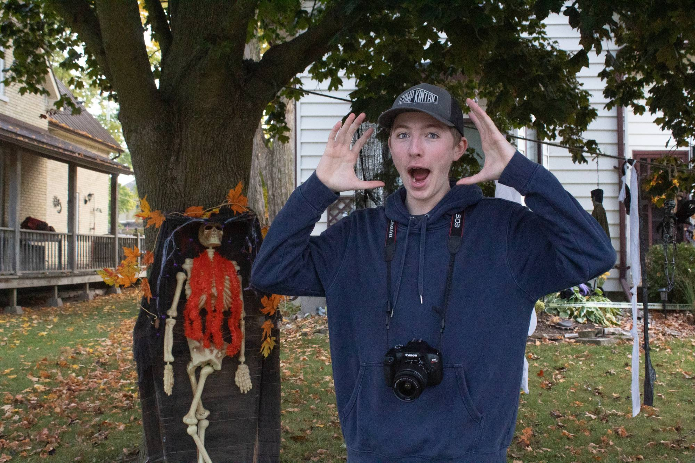
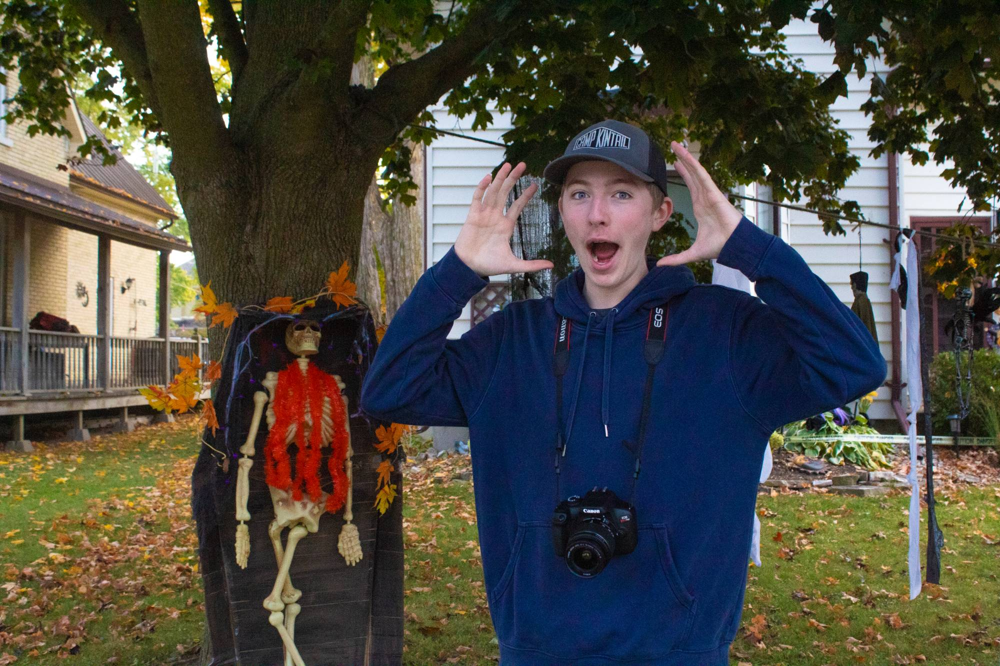
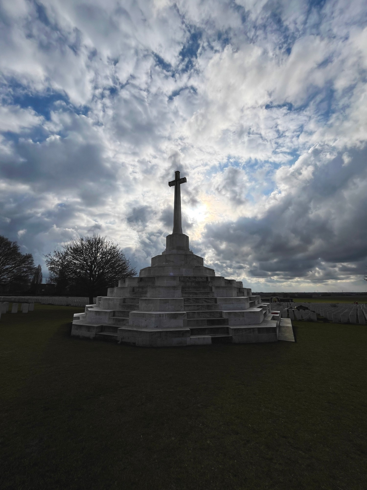
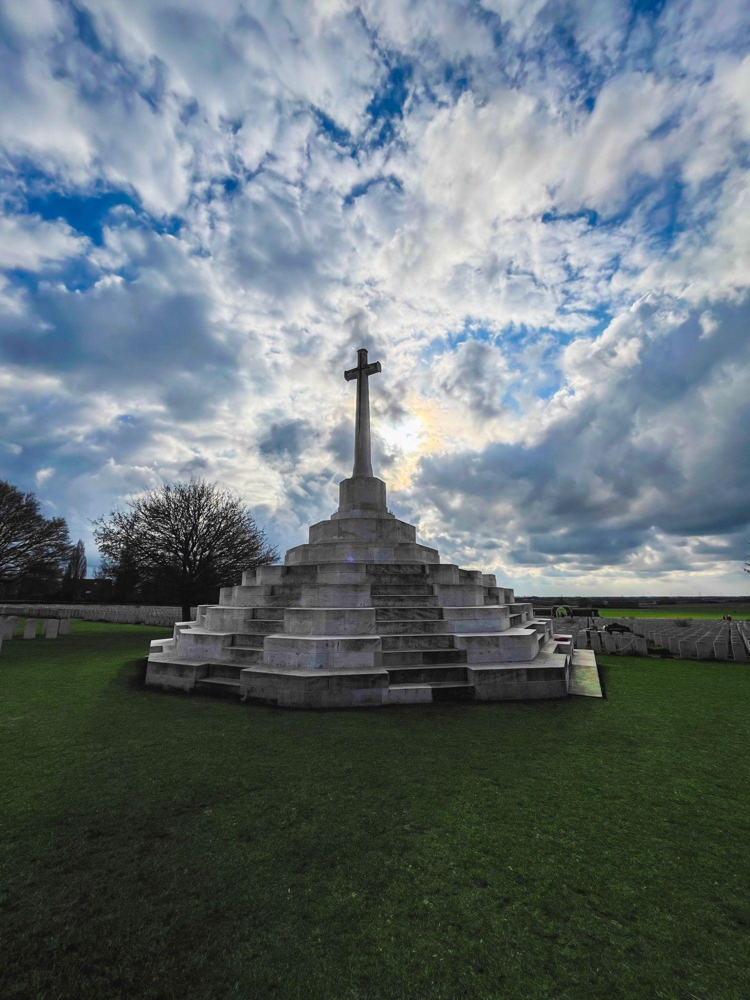
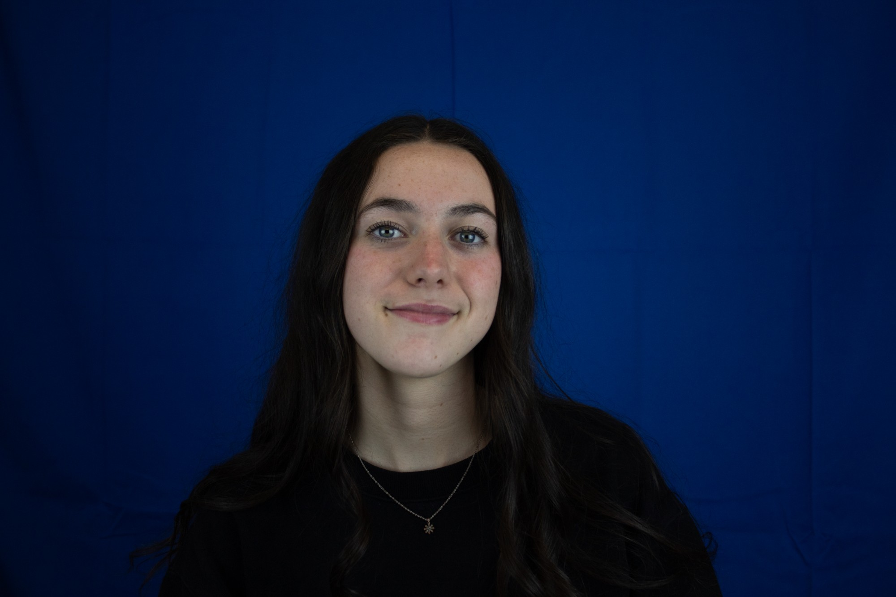
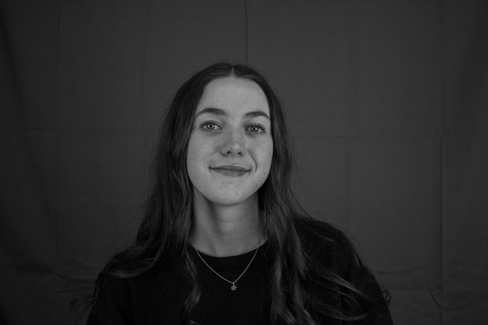

Unit · LightroomHow to use Vibrance
Summary
An editing exercise on the Vibrance slider in Lightroom, using an outdoor Halloween portrait of me with a camera around my neck. Vibrance boosts the colours that are dull while protecting colours that are already strong, including skin tones, so the image gets richer without looking over-processed.
Reflection
This edit taught me the difference between Vibrance and Saturation: Vibrance lifts muted colours first, so the leaves, grass and orange decorations came to life while blake's face stayed a natural colour. The challenge was knowing when to stop, since pushing it too far makes the whole frame look artificial. Next time I would pair it with a small saturation tweak and a mask to fine-tune specific areas.
Design process / progress
Drag the slider to compare the original with the edit.


Edit notes: what changed
- Vibrance: Raised so the muted colours gain richness first. The grass went from a flat green to a fuller green and the fallen leaves became a warmer orange.
- Protected tones: Skin tones were kept natural because Vibrance holds back on colours that are already saturated, so my face did not turn orange.
- Accent colours: The red garland on the skeleton and the navy of the hoodie are deeper, which makes the subject stand out against the background.
- Overall: The autumn mood is stronger without the harsh, over-processed look that a large Saturation increase would give.
These notes are based on comparing the two images. Edit them to match the exact slider values you used in Lightroom.
Final high-res export
Unit · LightroomLight, Colour & Effect Controls in Lightroom
Summary
An editing exercise using Lightroom's Light, Colour and Effects panels on a photo of a memorial cross, taken against a dramatic cloudy sky. The goal was to bring the clouds, stonework and grass to life while keeping the cross as a strong silhouette.
Reflection
In this edit, I wanted to really focus on the colour grading aspect, as you can see in the before-and-after; I actually increased the green saturation in front of the cross and decreased the green saturation out in the back. It managed to keep eye's where I wanted them to stay.
Design process / progress
Drag the slider to compare the original with the edit.


Edit notes: what changed
- Light: Shadows were lifted so detail returns to the grass and the base of the monument, which were close to black in the original. The bright sky was kept in check so the cloud texture stays intact.
- Colour: Vibrance and saturation were raised. The grass went from a dull, dark olive to a rich green, and the blues in the gaps between the clouds became deeper and cleaner.
- Colour (warmth): The warm glow around the sun behind the cross is stronger, which adds a point of interest next to the silhouette.
- Effects: Clarity / texture adds punch to the cloud edges and the stone steps, making the whole frame feel sharper and more dimensional.
These notes are based on comparing the two images. Edit them to match the exact panels and slider values you used in Lightroom.
Final high-res export
Unit · LightroomBlack & White in Lightroom
Summary
A black and white conversion exercise in Lightroom on a studio portrait shot against a deep blue backdrop. The goal was to turn a strongly coloured image into a moody monochrome portrait where the subject, not the background, holds the attention.
Reflection
This edit was about learning to control tone and colour instead of just making an image brighter. Converting to black and white meant the colours could no longer separate the subject from the backdrop, so I had to rely on brightness and contrast to guide the eye to the face. The hardest part was keeping the skin tones bright without losing detail in the hair and clothing. Next time I would try a subtle vignette to focus attention even more.
Design process / progress
Drag the slider to compare the original colour photo with the black and white edit.


Edit notes: what changed
- Black & White conversion: The image was converted to monochrome, which removes the saturated blue backdrop and turns it into a soft, dark grey.
- Tone mapping the colours: Because the blue is now a dark grey, the background sits back and the lighter skin tones stand out more, drawing the eye to the face.
- Contrast and tone: The tones were balanced so the face stays bright while the hair and clothing hold deep shadows, giving the portrait more depth.
- Detail: Fine detail such as the hair strands, the necklace and the fabric folds in the backdrop is easier to see without the colour competing for attention.
These notes are based on comparing the two images. Edit them to match the exact panels and slider values you used in Lightroom.